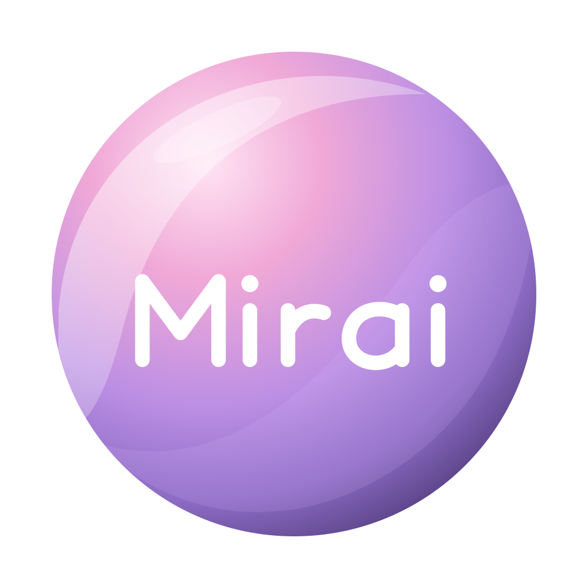

Documentos
Mirai Words
Da forma a tus ideas, un documento a la vez.
Windows x64
v0.18.1-mirai.2Windows ARM64
v0.18.1-mirai.2Fedora x86_64
v0.18.1-mirai.2Windows: certificado autofirmado · Fedora: sin firma · Antes de instalar

MiraiESPACIO CREATIVOLA FAMILIA MIRAI
Documentos, presentaciones, hojas de cálculo y PDF. Tus herramientas, conectadas por una misma identidad.
Forks independientes de la familia Craft.
Descargas directamente desde GitHub.
Un punto de encuentro para la familia Mirai. El proyecto busca reunir la instalación, actualización y apertura de tus aplicaciones.
Solo Windows ARM64; sin firma digital. Windows puede mostrar advertencias. La instalación y desinstalación del MSI se probaron, pero no la interfaz gráfica. SHA-256 ↗ · Notas y procedencia ↗ · Release más reciente v0.19.3 ↗
01 / APLICACIONES
Elige tu aplicación y tu sistema.
Solo paquetes publicados en GitHub.
Documentos
Da forma a tus ideas, un documento a la vez.
Windows: certificado autofirmado · Fedora: sin firma · Antes de instalar

Presentaciones
Convierte tus ideas en una presentación.
Sin firma de código · Antes de instalar
Windows x64 y ARM64: certificado autofirmado; Linux: sin firma. Consulta las notas antes de instalar.

Hojas de cálculo
Trabaja con tus datos, tablas y fórmulas.
Windows: certificado autofirmado · Fedora: sin firma · Antes de instalar
Un espacio para leer y trabajar con tus archivos PDF.
Windows x64 y ARM64: certificado autofirmado; Linux: sin firma. Consulta las notas antes de instalar.
02 / ANTES DE INSTALAR
MSI instala; ZIP es portátil. Elige la arquitectura de tu equipo: x64 o ARM64 donde se indique. Los RPM enlazados aquí son para Fedora x86_64. Consulta las releases para más paquetes Windows, Linux y web.
Words 0.18.1-mirai.2 y Calc 0.19.1-mirai.1 para Windows están firmados con un certificado autofirmado, que Windows puede no reconocer como confiable. Presentations v0.15.1 y Launcher v0.19.2 no están firmados. Las releases más recientes de Presentations, Reader y Launcher para Windows usan certificados autofirmados; los paquetes Linux listados no están firmados. Windows puede mostrar SmartScreen. Consulta las notas y el archivo SHA-256 de la release antes de decidir si ejecutarlos.
Algunos MSI anteriores comparten identidad y rutas con las aplicaciones originales y pueden reemplazarlas. Revisa las notas de la versión elegida; no se ha realizado una prueba completa de instalación durante esta revisión.
Volver a las descargas ↑03 / RESOLVEMOS TUS DUDAS
Lo esencial sobre las aplicaciones,
sus versiones y el asistente Mirai.
En Windows, elige la arquitectura de tu equipo: x64 o ARM64 donde esté disponible. El MSI instala la aplicación y el ZIP es la versión portátil. Los paquetes RPM aquí listados se publicaron para Fedora x86_64. Solo se muestran los sistemas con paquetes disponibles.
Los paquetes de Windows y Fedora pueden publicarse por separado. Cada descarga muestra su versión exacta; una versión más nueva de Fedora no significa que exista también para Windows. Consulta todas las releases para ver el historial.
Son forks independientes mantenidos en los repositorios Mirai de mirasins. Reader deriva de PdfCraft, Words de WordCraft, Presentations de DeckCraft y Calc de GridCraft. El launcher deriva de ArtCraft Launcher. Los nombres originales de algunos archivos se conservan.
El asistente de las aplicaciones requiere Claude Code instalado y una sesión iniciada con tu propia cuenta. El resto de la aplicación puede utilizarse sin el asistente. Revisa los requisitos de la release elegida.
Words 0.18.1-mirai.2 y Calc 0.19.1-mirai.1 para Windows usan un certificado autofirmado, sin confianza pública garantizada. Presentations v0.15.1 y Launcher v0.19.2 no están firmados. Las releases más recientes de Presentations, Reader y Launcher para Windows usan certificados autofirmados; los paquetes Linux listados no están firmados. Windows puede mostrar una advertencia de SmartScreen. Comprueba el repositorio de origen y las notas de la versión antes de decidir si ejecutar el archivo.